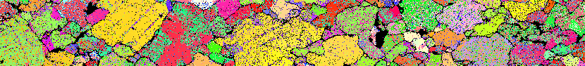

Pamela Kaercher
SCIENTIST, CODER
About Me
Welcome to my website! I made it for you. And because learning HTML and CSS sounded fun.
I'm mathematically-minded, and science fascinates me.
I always want to learn new things, and I enjoy research because the goal is to learn something that no one knew before.
My favorite part of research is data analysis, because that's when numbers turn into information, and eventually, a story.
University of California, Berkeley
Aug 2009 - May 2014
Saint Olaf College
Aug 2002 - May 2006
BA Physics | BA Mathematics
cum laude
Northfield, MN
New Orleans Police Department
July 2017 - Current
Crime Analyst III
I write programs to automate data pulls and data cleaning from multiple data sources with Python and SQL and create dynamic reports in SSRS, Power BI, and Tableau.
New Orleans, LA
University of Liverpool
Oct 2014- June 2017
Postdoctoral Researcher
Sythesized mineral samples, deformed them in controlled experiments while precisely measuring stress and strain, and analyzed and fit that data using Python to create a model
to predict how neighborite deforms. To see which mechanism it deforms by, I collected electron diffraction images and analyzed the images in Matlab.
Liverpool, UK
List of publications on Google Scholar
Overview of research on ResearchGate
University of California, Berkeley
Aug 2009- June 2014
Graduate Student Researcher and Instructor
I performed high pressure, high temperature deformation experiments at national synchrotron facilities and analyzed and interpreted the diffraction patterns I collected,
calculated mineral elasticity using density functional theory, and presented my findings at international conferences and published them in
peer-reviewed scientific journals. As a graduate student instructor for four semesters in the Earth and Planetary Science and Astronomy departments, I assisted on field trips,
ran the observation telescope, lead discussion sections, helped write exams, and graded papers. I volunteered to represent my department in the Society of Women in
Physical Sciences at Berkeley and participated in a mentoring program and outreach.
Berkeley, CA
List of publications on Google Scholar
Overview of research on ResearchGate
Accenture
Oct 2007- June 2009
Consulting Analyst
I maintained statistics, collected updates from department heads to track progress, and presented in client meetings. In one role, I tested IT systems before deployment.
Minneapolis, MN
East China Normal University
Aug 2006- June 2007
Oral English Teacher
I taught oral English to graduate students at East China Normal University as one of two fellows selected from St. Olaf College.
I designed curriculum, planned lessons, and created my own material. On the side, I taught at a middle school and at an undergraduate nursing college and
published monthly articles in a middle school English newspaper.
Shanghai, China
Research
X-ray diffraction
Scanning electron microscopy
Data analysis
Programming
Teaching
Machine learning
Python
SQL
Adobe Illustrator
Report Builder
Matlab
Power BI
Tableau
HTML*
CSS*
*learned to build this website!
